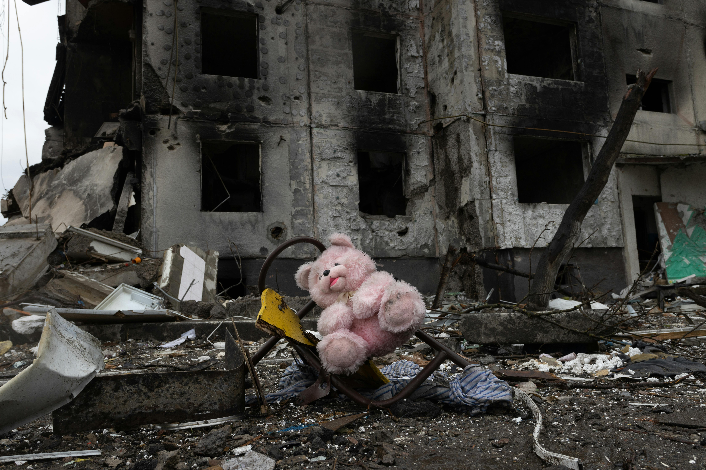
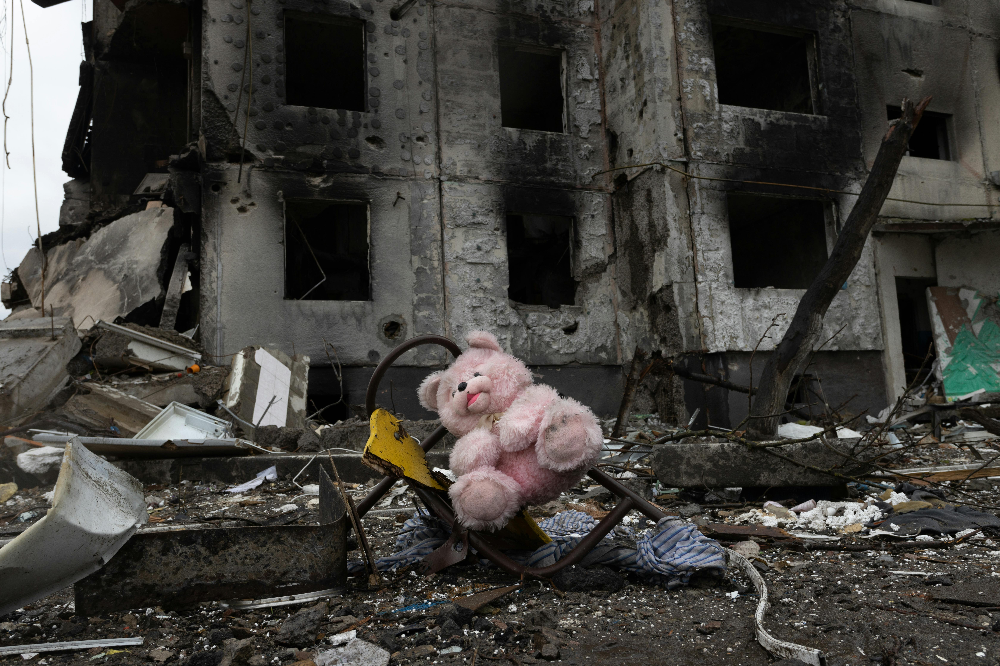
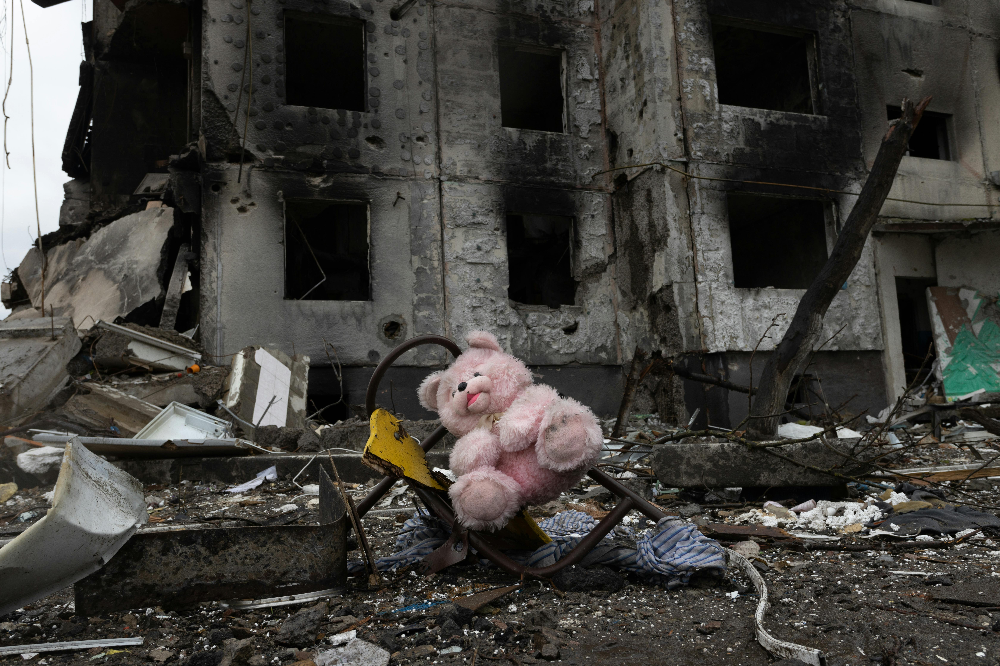

.jpg) 

Welcome to my Website.

**Introduction**
War has been a part of human history for centuries, leading to destruction, loss of life, and long-lasting impacts on societies. While some wars have been fought for independence, power, or resources, the consequences of war have always been devastating. This project explores the major effects of war on human life, economies, societies, and the environment.
**1. Loss of Human Lives**
One of the most tragic consequences of war is the loss of human lives. Millions of soldiers and civilians perish during conflicts, leaving behind broken families and communities. The impact is not only immediate but also affects future generations due to trauma and loss of skilled labor.
**2. Economic Consequences**
War places a heavy burden on a nation’s economy. Countries spend vast amounts on military resources, which could have been used for development. Infrastructure such as roads, bridges, and industries are destroyed, disrupting trade and economic stability. The rebuilding process after war takes years and drains national resources.
**3. Psychological and Emotional Trauma**
War leaves deep emotional scars on those affected. Soldiers often suffer from Post-Traumatic Stress Disorder (PTSD), anxiety, and depression. Civilians, especially children, experience fear, loss, and grief that can affect their mental health for a lifetime.
**4. Displacement and Refugee Crisis**
War forces millions of people to leave their homes, seeking safety in other regions or countries. Refugee crises put immense pressure on host nations, leading to overcrowding, poverty, and social tensions.
**5. Environmental Destruction**
Wars cause severe environmental damage through deforestation, air and water pollution, and destruction of ecosystems. The use of nuclear, chemical, and biological weapons has long-term effects on soil, water, and living beings.
**6. Political and Social Instability**
Wars weaken governments, sometimes leading to dictatorships, civil unrest, or prolonged conflicts. Political instability makes it difficult for societies to recover, as divisions and resentment among groups continue to exist even after the war ends.
**Conclusion**
War disrupts food production and supply chains, causing famine and malnutrition. Poor sanitation and lack of medical care result in the spread of deadly diseases, further worsening the situation for affected populations. Although war is destructive, it has also led to advancements in technology and medicine. Some inventions made during wartime, such as antibiotics, radar, and space technology, have been beneficial for society in peacetime. War has far-reaching consequences that affect individuals, nations, and the world as a whole. While conflicts may sometimes be unavoidable, efforts should always be made to resolve disputes peacefully. Promoting diplomacy, international cooperation, and understanding can help prevent wars and create a better future for humanity.
.jpg)
.png)
.png)
.png)
**Introduction**
Peace is essential for the development and well-being of societies. When a country or the world experiences peace, it allows for growth, stability, and prosperity. Peace is not merely the absence of war but also the presence of harmony, justice, and sustainable progress. This project explores the major effects of peace on human life, economies, societies, and the environment.
**1. Economic Growth and Development**
Peaceful nations experience strong economic growth as resources are directed towards development rather than military expenditures. Businesses thrive, trade flourishes, and investments increase, leading to job creation and improved living standards.
**2. Improved Quality of Life**
In peaceful societies, people have access to better healthcare, education, and social services. Citizens can focus on personal and professional growth, leading to a higher standard of living and overall well-being.
**3. Social Harmony and Unity**
Peace fosters social cohesion, bringing people together regardless of their cultural, religious, or ethnic backgrounds. When people coexist peacefully, societies become stronger, more inclusive, and tolerant of diversity.
**4. Political Stability**
A peaceful nation enjoys stable governance, where leaders focus on policies that improve the lives of citizens rather than dealing with conflicts. Political stability leads to good governance, justice, and effective administration.
**5. Advancement in Science and Technology**
In peaceful times, countries invest in scientific research and technological advancements. Medical breakthroughs, space exploration, and environmental solutions thrive in an environment free from war and destruction.
**6. Environmental Protection**
War often leads to deforestation, pollution, and destruction of natural resources. In contrast, peace allows governments and organizations to focus on sustainability, conservation, and tackling climate change for a healthier planet.
**7. Cultural and Educational Growth**
Peace promotes the exchange of knowledge, arts, and culture. Students can pursue education without disruption, and creative industries flourish, leading to cultural enrichment and intellectual progress.
**8. Reduction in Poverty and Inequality**
Peaceful societies have better opportunities to address issues like poverty, hunger, and inequality. Governments can focus on social welfare programs, ensuring equal opportunities for all citizens.
**9. Improved International Relations**
Peace strengthens diplomatic relations between nations, leading to collaboration in trade, humanitarian aid, and global problem-solving. International cooperation fosters a more interconnected and supportive world.
**Conclusion**
Peace is the foundation for prosperity, stability, and human progress. It allows societies to flourish in all aspects of life, from economic growth to cultural development. Promoting peace through education, dialogue, and mutual understanding is crucial for building a better future for all of humanity.